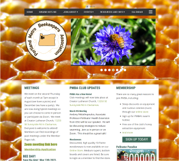

Introduction & Research
Portland Metro Beekeepers Association
Portland Metro Beekeepers Association (PMBA) was founded in 1990 as a group of professional and amateur beekeepers that support each other in their beekeeping activities. Our group was interested in redesigning their website from an desire support an environmentally-conscious non-profit and the aesthetic opportunities bees and honeycomb patterns would provide us.
Research
We began our research by creating a proto-persona and conducting surveys and qualitative interviews to validate our assumptions. Our user interviews clarified pain points on the existing website and we were able to connect with the communicator of PMBA to get insight on the organizations’ wants and needs.
Proto-Persona
This is Patricia Johnson, our proto-persona. She is a retired teacher, homeowner, and beekeeping enthusiast.